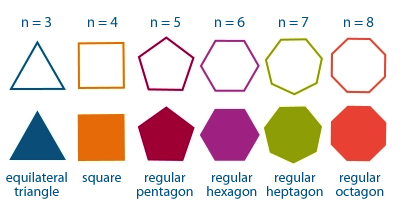

A regular n-polygon is any poligon whose sides are equals and angles too.

Here you can calculate the perimeter of a regular n-polygon introducing the number of sides and their length with this formula:P=nl
Number of sides:
Length of the sides:
Perimeter:
Back